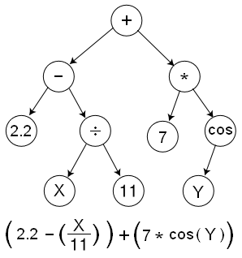
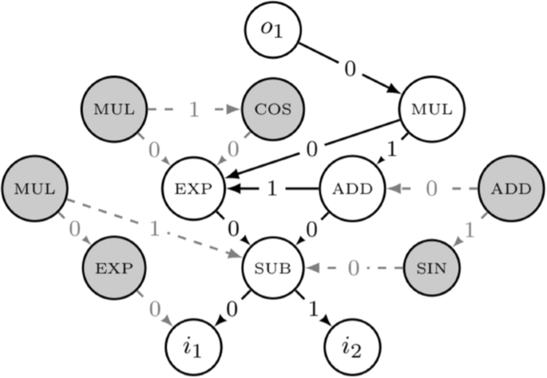

Genetic Programming
 Under Construction
Under Construction
As of 9/8/2025: These docs are a work in progress and may not be complete or fully accurate. Please check back later for updates.
Genetic Programming (GP) in Radiate enables the evolution of programs represented as expression trees and computational graphs. This powerful feature allows you to solve complex problems by evolving mathematical expressions, decision trees, neural network topologies, and more.
Radiate's GP implementation provides two core data structures: Trees for hierarchical expressions and Graphs for complex computational networks. Each offers unique capabilities for different problem domains. Both the tree and graph modules come with their own specific chromosomes, codecs and alters to evolve these structures effectively.
Installation
To use Radiate's Genetic Programming features, you need to install the library with the appropriate feature flags.
Overview
| Structure | Best For | Complexity | Use Cases |
|---|---|---|---|
| Arity | Number of inputs for nodes and ops | Low | Function arguments, input counts |
| Ops | Operations and functions for nodes | Low | Mathematical, logical, activation functions |
| Nodes | Building blocks for trees and graphs | Low | Node types, arity, operations |
| Trees | Symbolic regression, mathematical expressions | Low-Medium | Formula discovery, decision trees |
| Graphs | Neural networks, complex computations | Medium-High | Neural evolution, complex programs |
| Regression | Regression tasks with trees and graphs | Medium | Function approximation, data fitting |
Arity
Arity is a term used to describe the number of arguments or inputs a function takes. In the context of genetic programming, arity is crucial for defining how many inputs a node or an op can accept in both trees and graphs. For graphs arity is used to determine how many incoming connections a GraphNode can have, while for trees it determines how many children a TreeNode can have. Radiate uses an enum to express arity defined in three variants:
- Zero: The operation takes no inputs (e.g., constants).
- Exact(usize): The operation takes a specific number of inputs.
- Any: The operation can take any number of inputs (e.g., functions like sum or product).
In most cases, the tree or graph will try it's best ensure that their node's arity is not violated, but it will ultimately be up to the user to ensure that the arity is correct.
Ops
The ops module provides sets of operations and formats for building and evolve genetic programs including graphs and trees. In the language of radiate, when using an op, it is the Allele of the GraphNode or TreeNode.
An op is a function that takes a number of inputs and returns a single output. The op can be a constant value, a variable, or a function that operates on the inputs.
The op comes in five flavors:
- Function Operations: Stateless functions that take inputs and return a value.
- Variable Operations: Read from an input index, returning the value at that index.
- Constant Operations: Fixed values that do not change - returning the value when called.
- Mutable Constant Operations: Constants that can change over time, allowing for learnable parameters.
- Value Operations: Stateful operations that maintain internal state and can take inputs to produce a value.
Each op has an arity, definingt the number of inputs it accepts. For example, the Add operation has an arity of 2 because it takes two inputs and returns their sum. The Const operation has an arity of 0 because it does not take any inputs, it just returns it's value. The Var operation has an arity of 0 because it takes an index as a parameter, and returns the value of the input at that index.
Provided Ops include:
Basic ops
| Name | Arity | Description | Initalize | Type |
|---|---|---|---|---|
const |
0 | x | Op::constant() |
Const |
named_const |
0 | x | Op::named_constant(name) |
Const |
var |
0 | input[i] - return the value of the input at index i |
Op::var(i) |
Var |
identity |
1 | return the input value | Op::identity() |
Fn |
Basic math operations
| Name | Arity | Description | Initalize | Type |
|---|---|---|---|---|
Add |
2 | x + y | Op::add() |
Fn |
Sub |
2 | x - y | Op::sub() |
Fn |
Mul |
2 | x * y | Op::mul() |
Fn |
Div |
2 | x / y | Op::div() |
Fn |
Sum |
Any | Sum of n values | Op::sum() |
Fn |
Product |
Any | Product of n values | Op::prod() |
Fn |
Difference |
Any | Difference of n values | Op::diff() |
Fn |
Neg |
1 | -x | Op::neg() |
Fn |
Abs |
1 | abs(x) | Op::abs() |
Fn |
pow |
2 | x^y | Op::pow() |
Fn |
Sqrt |
1 | sqrt(x) | Op::sqrt() |
Fn |
Abs |
1 | abs(x) | Op::abs() |
Fn |
Exp |
1 | e^x | Op::exp() |
Fn |
Log |
1 | log(x) | Op::log() |
Fn |
Sin |
1 | sin(x) | Op::sin() |
Fn |
Cos |
1 | cos(x) | Op::cos() |
Fn |
Tan |
1 | tan(x) | Op::tan() |
Fn |
Max |
Any | Max of n values | Op::max() |
Fn |
Min |
Any | Min of n values | Op::min() |
Fn |
Ceil |
1 | ceil(x) | Op::ceil() |
Fn |
Floor |
1 | floor(x) | Op::floor() |
Fn |
Weight |
1 | Weighted sum of n values | Op::weight() |
MutableConst |
Activation Ops
These are the most common activation functions used in Neural Networks.
| Name | Arity | Description | Initalize | Type |
|---|---|---|---|---|
Sigmoid |
Any | 1 / (1 + e^-x) | Op::sigmoid() |
Fn |
Tanh |
Any | tanh(x) | Op::tanh() |
Fn |
ReLU |
Any | max(0, x) | Op::relu() |
Fn |
LeakyReLU |
Any | x if x > 0 else 0.01x | Op::leaky_relu() |
Fn |
ELU |
Any | x if x > 0 else a(e^x - 1) | Op::elu() |
Fn |
Linear |
Any | Linear combination of n values | Op::linear() |
Fn |
Softmax |
Any | Softmax of n values | Op::softmax() |
Fn |
Softplus |
Any | log(1 + e^x) | Op::softplus() |
Fn |
SELU |
Any | x if x > 0 else a(e^x - 1) | Op::selu() |
Fn |
Swish |
Any | x / (1 + e^-x) | Op::swish() |
Fn |
Mish |
Any | x * tanh(ln(1 + e^x)) | Op::mish() |
Fn |
bool Ops
| Name | Arity | Description | Initalize | Type |
|---|---|---|---|---|
And |
2 | x && y | Op::and() |
Fn |
Or |
2 | x || y |
Op::or() |
Fn |
Not |
1 | !x | Op::not() |
Fn |
Xor |
2 | x ^ y | Op::xor() |
Fn |
Nand |
2 | !(x && y) | Op::nand() |
Fn |
Nor |
2 | !(x || y) |
Op::nor() |
Fn |
Xnor |
2 | !(x ^ y) | Op::xnor() |
Fn |
Equal |
2 | x == y | Op::eq() |
Fn |
NotEqual |
2 | x != y | Op::ne() |
Fn |
Greater |
2 | x > y | Op::gt() |
Fn |
Less |
2 | x < y | Op::lt() |
Fn |
GreaterEqual |
2 | x >= y | Op::ge() |
Fn |
LessEqual |
2 | x <= y | Op::le() |
Fn |
IfElse |
3 | if x then y else z | Op::if_else() |
Fn |
Ops in python can't be directly evaluated like in rust. However, they can still be constructed and used in a similar way.
use radiate::*;
// Example usage of an Op
let fn_op = Op::add();
let result = fn_op.eval(&[1.0, 2.0]); // result is 3.0
// Example usage of a constant Op
let const_op = Op::constant(42.0);
let result = const_op.eval(&[]); // result is 42.0
// Example usage of a variable Op
let var_op = Op::var(0); // Read from input at index 0
let inputs = var_op.eval(&[5.0, 10.0]); // result is 5.0 when evaluated with inputs
Alters
OperationMutator
Inputs
rate: f32 - Mutation rate (0.0 to 1.0)replace_rate: f32 - Rate at which to replace an oldopwith a completely new one (0.0 to 1.0)
- Purpose: Randomly mutate an operation within a
TreeNodeorGraphNode.
This mutator randomly changes or alters the op of a node within a TreeChromosome or GraphChromosome. It can replace the op with a new one from the store or modify its parameters.
Nodes
Nodes are not only the gene of the graph and tree, but the fundamental building blocks of them. Each node represents a connection, computation, or operation, and has explicit rules depending on its role in the structure.
Roles
Nodes in the gp system come in different types (roles) depending on whether you're working with trees or graphs:
Tree Node Types:
- Root: The starting point of a tree (can have any number of children)
- Vertex: Internal computation nodes (can have any number of children)
- Leaf: Terminal nodes with no children (arity is
Arity::Zero)
Graph Node Types:
- Input: Entry points (no incoming connections, one or more outgoing)
- Output: Exit points (one or more incoming connections, no outgoing)
- Vertex: Internal computation nodes (both incoming and outgoing connections)
- Edge: Connection nodes (exactly one incoming and one outgoing connection)
Each node type is defined by the NodeType enum:
Store
The NodeStore<T> manages available values for different node types, providing a centralized way to define what values can be used in each position of your genetic program. This makes it super easy to create trees or graphs from a specific template or with a specific structure.
Usage Examples:
There is no node store for python - it isn't nessesary for the api. Instead, the types of nodes are directly given the their codec or structure.
use radiate::*;
// Create a store for tree operations
// Each vertex node created will have a random value chosen from [1, 2, 3]
// Each leaf node created will have a random value chosen from [4, 5, 6]
let tree_store: NodeStore<i32> = vec![
(NodeType::Vertex, vec![1, 2, 3]),
(NodeType::Leaf, vec![4, 5, 6]),
].into();
// -- or use the macro --
let tree_store: NodeStore<i32> = node_store! {
Root => [1, 2, 3],
Vertex => [1, 2, 3],
Leaf => [4, 5, 6],
}
// -- with ops --
// for trees, the input nodes are always the leaf nodes, so we can use the `Op::var` to represent them
let op_store: NodeStore<Op<f32>> = node_store! {
Root => [Op::sigmoid()],
Vertex => [Op::add(), Op::mul()],
Leaf => (0..3).map(Op::var).collect::<Vec<_>>(),
};
// Create a new vertex tree node
let tree_node: TreeNode<i32> = tree_store.new_instance(NodeType::Vertex);
// Create a new leaf tree node
let leaf_node: TreeNode<Op<f32>> = op_store.new_instance(NodeType::Leaf);
// Create a store for graph operations
// Each input node created will have a random value chosen from [1, 2]
// Each edge node created will have a random value chosen from [3, 4]
// Each vertex node created will have a random value chosen from [5, 6, 7]
// Each output node created will have a random value chosen from [8, 9, 10]
let graph_store: NodeStore<i32> = vec![
(NodeType::Input, vec![1, 2]),
(NodeType::Edge, vec![3, 4]),
(NodeType::Vertex, vec![5, 6, 7]),
(NodeType::Output, vec![8, 9, 10]),
].into();
// -- or use the macro --
let graph_store: NodeStore<i32> = node_store! {
Input => [1, 2],
Edge => [3, 4],
Vertex => [5, 6, 7],
Output => [8, 9, 10],
};
// -- with ops --
let op_store: NodeStore<Op<f32>> = node_store! {
Input => [Op::var(0), Op::var(1)],
Edge => [Op::add(), Op::mul()],
Vertex => [Op::sub(), Op::div(), Op::max()],
Output => [Op::sigmoid(), Op::tanh(), Op::relu()],
};
// Create a new vertex graph node at index 0
let graph_node: GraphNode<i32> = graph_store.new_instance((0, NodeType::Vertex));
// Createa a new edge graph node at index 1
let edge_node: GraphNode<Op<f32>> = op_store.new_instance((1, NodeType::Edge));
Node Type Mapping:
- Tree:
Root,Vertex,Leaf - Graph:
Input,Output,Vertex,Edge
Store Validation: The node store ensures that:
- Each node type has appropriate value
- Values have compatible arity for their node type
- Invalid combinations are prevented during evolution
Trees
A tree represents a hierarchical structure where each node has exactly one parent (except the root) and zero or more children. When combined with the ops, it allows for the evolution of mathematical expressions, decision trees, and symbolic regression.

Trees in python aren't quite as expressive as in rust, but they can still be constructed and used in a similar way.
use radiate::*;
// create a simple tree:
// 42
// / | \
// 1 2 3
// / \
// 3 4
let tree: Tree<i32> = Tree::new(TreeNode::new(42)
.attach(TreeNode::new(1))
.attach(TreeNode::new(2)
.attach(TreeNode::new(3))
.attach(TreeNode::new(4))
.attach(TreeNode::new(3))));
// The tree can be evaluated with a function that takes a vector of inputs
// This creates a `Tree` that looks like:
// +
// / \
// * +
// / \ / \
// 2 3 2 x
//
// Where `x` is the first variable in the input.
// This can also be thought of (and is functionally equivalent) as:
//
// f(x) = (2 * 3) + (2 + x)
//
let root = TreeNode::new(Op::add())
.attach(
TreeNode::new(Op::mul())
.attach(TreeNode::new(Op::constant(2.0)))
.attach(TreeNode::new(Op::constant(3.0))),
)
.attach(
TreeNode::new(Op::add())
.attach(TreeNode::new(Op::constant(2.0)))
.attach(TreeNode::new(Op::var(0))),
);
// And the result of evaluating this tree with an input of `1` would be:
let result = root.eval(&vec![1_f32]);
assert_eq!(result, 9.0);
Key Properties:
- Rooted: Always has a single root node
- Acyclic: No node is its own ancestor
- Hierarchical: Parent-child relationships
Node
Each node in a tree contains a value and optional children & arity. The TreeNode also implements the gene trait, making the node itself a gene and it's value the allele.
Node Types:
- Root: Starting point of the tree (can have any number of children)
- Vertex: Internal computation nodes (can have any number of children)
- Leaf: Terminal nodes with no children (arity is
Arity::Zero)
Codec
The TreeCodec is simply a codec that encodes a TreeChromosome and decodes it back into a Tree. The TreeCodec can be configured to create a single tree or a multi-root tree structure.
Codec Types:
- Single Root: Creates one tree per
genotype - Multi-Root: Creates multiple trees per
genotype
import radiate as rd
# Create a tree codec with a starting (minimum) depth of 3
codec = rd.TreeCodec(
shape=(2, 1),
min_depth=3,
max_size=30,
root=rd.Op.add(),
vertex=[rd.Op.add(), rd.Op.sub(), rd.Op.mul()],
leaf=[rd.Op.var(0), rd.Op.var(1)],
)
genotype = codec.encode()
tree = codec.decode(genotype)
use radiate::*;
let store = vec![
(NodeType::Root, vec![Op::add(), Op::sub()]),
(NodeType::Vertex, vec![Op::add(), Op::sub(), Op::mul()]),
(NodeType::Leaf, vec![Op::constant(1.0), Op::constant(2.0)]),
];
// Create a single rooted tree codec with a starting (minimum) depth of 3
let codec = TreeCodec::single(3, store);
let genotype: Genotype<TreeChromosome<Op<f32>>> = single_root_codec.encode();
let tree: Tree<Op<f32>> = codec.decode(&genotype);
// Create a multi-rooted tree codec with a starting (minimum) depth of 3 and 2 trees
let codec = TreeCodec::multi_root(3, 2, store);
let genotype: Genotype<TreeChromosome<Op<f32>>> = codec.encode();
// multi-rooted codec decodes to a Vec of Trees
// one for each root in the genotype
let trees: Vec<Tree<Op<f32>>> = codec.decode(&genotype);
Alters
HoistMutator
Inputs
rate: f32 - Mutation rate (0.0 to 1.0)
- Purpose: Randomly hoists subtrees from one part of the tree to another.
The HoistMutator is a mutation operator that randomly selects a subtree from the tree and moves it to a different location in the tree. This can create new structures and relationships between nodes, allowing for more complex solutions to emerge.
TreeCrossover
Inputs
rate: f32 - Mutation rate (0.0 to 1.0)
- Purpose: Swaps two subtrees between two trees.
The TreeCrossover is a crossover operator that randomly selects a subtree from one parent tree and swaps it with a subtree from another parent tree.
Graphs
Graphs are a powerful way to represent problems. They are used in many fields, such as Neural Networks, and can be used to solve complex problems. Radiate thinks of graphs in a more general way than most implementations. Instead of being a collection of inputs, nodes, edges, and outputs, radiate thinks of a graph as simply a bag of nodes that can be connected in any way. Why? Well, because it allows for more flexibility within the graph and it lends itself well to the evolutionary nature of genetic programming. However, this representation is not without it's drawbacks. It can be difficult to reason about the graph and it can be difficult to ensure that the graph is valid. Radiate tries to mitigate these issues by sticking to a few simple rules that govern the graph.
- Each input node must have 0 incoming connections and at least 1 outgoing connection.
- Each output node must have at least 1 incoming connection and 0 outgoing connections.
- Each edge node must have exactly 1 incoming connection and 1 outgoing connection.
- Each vertex node must have at least 1 incoming connection and at least 1 outgoing connection.
With these rules in mind, we can begin to build and evolve graphs. The graph typically relies on an underlying GraphArchitect to construct a valid graph. This architect is a builder pattern that keeps an aggregate of nodes added and their relationships to other nodes. Because of the architect's decoupled nature, we can easily create complex graphs. When combined with the op functionality, the graph module allows for the creation of complex computational graphs that can be evolved to solve or eval regression problems.

Radiate provides a few basic graph architectures, but it is also possible to construct your own graph through either the built in graph functions or by using the architect. In most cases building a graph requires a vec of tuples (or a NodeStore) where the first element is the NodeType and the second element is a vec of values that the GraphNode can take. The NodeType is either Input, Output, Vertex, or Edge. The value of the GraphNode is picked at random from the vec of it's NodeType.
Key Properties:
- Flexible Connections: Nodes can have multiple inputs/outputs
- Indexed Access: Each node has a unique index in the vector
- Connection Sets: Each node maintains incoming/outgoing connections
- Direction Support: Can be directed acyclic (DAG) or cyclic
Manually create a simple graph:
Creating a graph in python doesn't offer as much flexibility as in rust at the current time, but it can still be done.
use radiate::*;
// create a simple graph:
// 0 -> 1 -> 2
let mut graph = Graph::<i32>::default();
let idx_one = graph.insert(NodeType::Input, 0);
let idx_two = graph.insert(NodeType::Vertex, 1);
let idx_three = graph.insert(NodeType::Output, 2);
graph.attach(idx_one, idx_two).attach(idx_two, idx_three);
// Set cycles in a cyclic graph:
let mut graph = Graph::<i32>::default();
let idx_one = graph.insert(NodeType::Input, 0);
let idx_two = graph.insert(NodeType::Vertex, 1);
let idx_three = graph.insert(NodeType::Vertex, 2);
let idx_four = graph.insert(NodeType::Output, 3);
graph
.attach(idx_one, idx_two)
.attach(idx_two, idx_three)
.attach(idx_three, idx_two)
.attach(idx_three, idx_four)
.attach(idx_four, idx_two);
graph.set_cycles(vec![]);
Now, the above works just fine, but can become cumbersome quickly. To ease the process of creating a graph, we can use the default graph types to create graphs in a better way. All we need to do is define a NodeStore that contains the possible values for each node given a NodeType.
use radiate::*;
// Input nodes are picked in order while the rest of the node's values
// are picked at random.
// Take note that the NodeType::Input has two variables, [0, 1]
// and we create a graph with two input nodes.
let values = vec![
(NodeType::Input, vec![Op::var(0), Op::var(1)]),
(NodeType::Edge, vec![Op::weight()]),
(NodeType::Vertex, vec![Op::sub(), Op::mul(), Op::linear()]),
(NodeType::Output, vec![Op::linear()]),
];
// create a directed graph with 2 input nodes and 2 output nodes
let graph: Graph<Op<f32>> = Graph::directed(2, 2, values);
// create a recurrent graph with 2 input nodes and 2 output nodes
let graph: Graph<Op<f32>> = Graph::recurrent(2, 2, values);
// create a weighted directed graph with 2 input nodes and 2 output nodes
let graph: Graph<Op<f32>> = Graph::weighted_directed(2, 2, values);
// create a weighted recurrent graph with 2 input nodes and 2 output nodes
let graph: Graph<Op<f32>> = Graph::weighted_recurrent(2, 2, values);
// Op graphs can be evaluated much like trees, but with the added complexity of connections.
let inputs = vec![vec![1.0, 2.0]];
let outputs = graph.eval(&inputs);
Node
The GraphNode struct is a fundamental building block for graph-based genetic programming in Radiate. It represents a node in a directed graph that can have both incoming and outgoing connections to other nodes. Each node has a unique identifier, an index in the graph, a value of type T, and maintains sets of incoming and outgoing connections. The GraphNode can be of different types, such as Input, Output, Vertex, or Edge, each serving a specific role in the graph structure. To ensure the integrity of the graph, the GraphNode enforces rules based on its type, such as the number of incoming and outgoing connections it can have. In order to facilitate genetic programming, the GraphNode implements the Gene trait, where it's allele is the value of the node, and its gene is the node itself.
Node Types:
- Input: Entry points (no incoming, one or more outgoing)
- Output: Exit points (one or more incoming, no outgoing)
- Vertex: Internal computation (both incoming and outgoing)
- Edge: Connection nodes (exactly one incoming and one outgoing)
There is no GraphNode in python. It isn't necessary for the api.
use radiate::*;
// Create a new input node with value 42
let node = GraphNode::new(0, NodeType::Input, 42);
// Create a node with specific arity
// This node will be invalid if it has a number of incoming connections other than 2
let node_with_arity = GraphNode::with_arity(1, NodeType::Vertex, 42, Arity::Exact(2));
Codec
The GraphCodec is a codec that encodes a GraphChromosome and decodes it back into a Graph. The GraphCodec can be configured to create directed or recurrent graphs.
# Create a directed graph codec
codec = GraphCodec.directed(
shape=(2, 1),
vertex=[rd.Op.add(), rd.Op.mul()],
edge=rd.Op.weight(),
output=rd.Op.linear()
)
genotype = codec.encode()
graph = codec.decode(genotype)
# Create a recurrent graph codec
codec = GraphCodec.recurrent(
shape=(2, 1),
vertex=[rd.Op.add(), rd.Op.mul()],
edge=rd.Op.weight(),
output=rd.Op.linear()
)
genotype = codec.encode()
recurrent_graph = codec.decode(genotype)
use radiate::*;
// Create a store for graph operations
let store = vec![
(NodeType::Input, vec![Op::var(0), Op::var(1)]),
(NodeType::Edge, vec![Op::add(), Op::mul()]),
(NodeType::Vertex, vec![Op::sub(), Op::div()]),
(NodeType::Output, vec![Op::sigmoid(), Op::tanh()]),
];
// Create a directed graph codec with 2 input nodes and 2 output nodes
let codec = GraphCodec::directed(2, 2, store);
let genotype: Genotype<GraphChromosome<Op<f32>>> = codec.encode();
let graph: Graph<Op<f32>> = codec.decode(&genotype);
// Create a recurrent graph codec with 2 input nodes and 2 output nodes
let recurrent_codec = GraphCodec::recurrent(2, 2, store);
let recurrent_genotype: Genotype<GraphChromosome<Op<f32>>> = recurrent_codec.encode();
let recurrent_graph: Graph<Op<f32>> = recurrent_codec.decode(&recurrent_genotype);
Alters
GraphMutator
Inputs
vertex_rate: f32 - Probabilty of adding a vertex to the graph (0.0 to 1.0)edge_rate: f32 - Probabilty of adding an edge to the graph (0.0 to 1.0)allow_recurrent: bool - Whether to allow recurrent connections in the graph. The default isfalse, meaning the graph will be a directed acyclic graph (DAG).
- Purpose: Randomly adds vertices and edges to the graph.
This mutator is used to add new nodes and connections to the graph. It can be used to evolve the graph structure over time, allowing for more complex solutions to emerge.
GraphCrossover
Inputs
rate: f32 - Crossover rate (0.0 to 1.0)cross_parent_node_rate: f32 - Probability of the less fit parent taking a node from the more fit parent (0.0 to 1.0)
- Purpose: Swaps node value's (
alleles) between two graphs.
This crossover operator is used to combine two parent graphs by swapping the values of their nodes. It can be used to create new graphs that inherit the structure and values of their parents. Given that a more fit parent's node's arity matches the less fit parent's node's arity, the less fit parent will take (inherit) the more fit parent's node's value. This means the child is guaranteed to have the same structure as the less fit parent, but with some of the more fit parent's values (alleles). This process is extremely similar to how the NEAT algorithm works.
Regression
In machine learning its common to have a regression task. This is where you have a set of inputs and outputs, and you want to find a function that maps the inputs to the outputs. In Radiate, we can use genetic programming to evolve a tree or graph to do just that. The regression problem is a special type of problem that simplifies this process. It provides functionality to normalize/standarize/OHE the inputs and outputs, as well as calculate the fitness of a genotype based on how well it maps the inputs to the outputs.
The regression problem (fitness function) takes a set of inputs and outputs, and optionally a loss function. The default loss function is mean squared error (MSE), but other options include MAE (mean average error), CrossEntropy loss, and Diff (Difference) - a simple difference between output and target.
Lets take a quick look at how we would put together a regression problem using a tree and a graph.
import radiate as rd
rd.random.seed(518)
def compute(x: float) -> float:
return 4.0 * x**3 - 3.0 * x**2 + x
inputs = []
answers = []
# Create a simple dataset of 20 points where the input is between -1 and 1
# and the output is the result of the compute function above
input = -1.0
for _ in range(-10, 10):
input += 0.1
inputs.append([input])
answers.append([compute(input)])
# Create a simple GraphCodec which takes one input and produces one output
# The graph will have vertex nodes that can add, subtract, or multiply
# The edges will have a weight operation and the output will be linear
codec = rd.GraphCodec.directed(
shape=(1, 1),
vertex=[rd.Op.sub(), rd.Op.mul(), rd.Op.linear()],
edge=rd.Op.weight(),
output=rd.Op.linear(),
)
# All we have to do to create a regression problem is provide the features & targets for our
# dataset. Optionally, we can provide a loss function as well - the default is mean squared error (MSE).
fitness_func = rd.Regression(inputs, answers, loss="mse")
engine = rd.GeneticEngine(
codec=codec,
fitness_func=fitness_func,
objectives="min", # Minimize the loss
alters=[
rd.GraphCrossover(0.5, 0.5),
rd.OperationMutator(0.07, 0.05),
rd.GraphMutator(0.1, 0.1),
],
)
# Run the genetic engine with a score (error) limit of 0.001 or a maximum of 1000 generations
result = engine.run([rd.ScoreLimit(0.001), rd.GenerationsLimit(1000)], log=True)
use radiate::*;
const MIN_SCORE: f32 = 0.001;
fn main() {
// Set the random seed for reproducibility
random_provider::set_seed(1000);
// Define our node store for the graph - the operations that can be used by each
// node type in the graph during evolution
let store = vec![
(NodeType::Input, vec![Op::var(0)]),
(NodeType::Edge, vec![Op::weight()]),
(NodeType::Vertex, vec![Op::sub(), Op::mul(), Op::linear()]),
(NodeType::Output, vec![Op::linear()]),
];
let engine = GeneticEngine::builder()
.codec(GraphCodec::directed(1, 1, store))
.fitness_fn(Regression::new(dataset(), Loss::MSE))
.minimizing()
.alter(alters!(
GraphCrossover::new(0.5, 0.5),
OperationMutator::new(0.07, 0.05),
GraphMutator::new(0.1, 0.1).allow_recurrent(false)
))
.build();
engine
.iter()
.logging()
.until_score(MIN_SCORE)
.last()
.inspect(display);
}
// A simple function to take the output of the engine and display the accuracy
// of the result on the dataset
fn display(result: &Generation<GraphChromosome<Op<f32>>, Graph<Op<f32>>>) {
// NOTE: the below is subject to some change - I'm not 100% happy with how this looks
// and I think it can be simplified a bit.
let mut evaluator = GraphEvaluator::new(result.value());
let data_set = dataset().into();
let accuracy = Accuracy::new("reg", &data_set, Loss::MSE);
let accuracy_result = accuracy.calc(|input| evaluator.eval_mut(input));
println!("{:?}", result);
println!("{:?}", accuracy_result);
}
fn dataset() -> impl Into<DataSet> {
let mut inputs = Vec::new();
let mut answers = Vec::new();
let mut input = -1.0;
for _ in -10..10 {
input += 0.1;
inputs.push(vec![input]);
answers.push(vec![compute(input)]);
}
(inputs, answers)
}
fn compute(x: f32) -> f32 {
4.0 * x.powf(3.0) - 3.0 * x.powf(2.0) + x
}
More robust examples can be found in the next section or in the tree and graph examples in the git repository.